Tiny footprint
About 255 KiB installed. Icons are inlined at build time and the CSS and JS are minified.
Faceplate replaces LuCI's dated look with a fast, mobile-first design and adds a live dashboard that shows what's connected, what's slow and what's insecure.
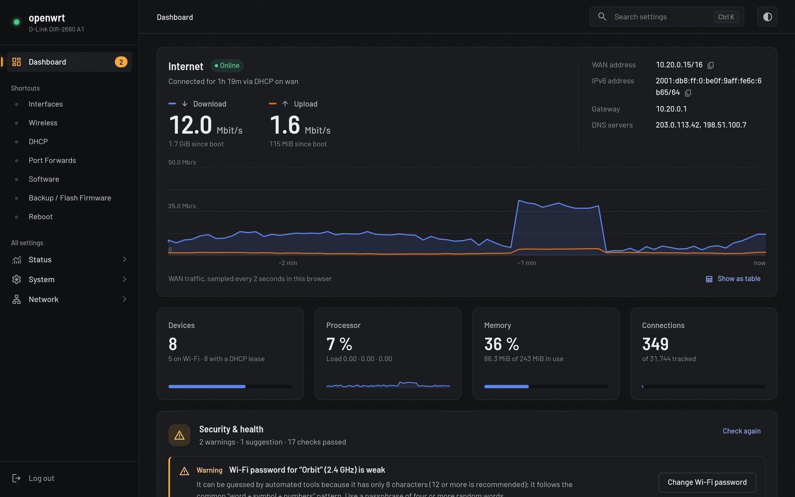
What you get
Faceplate keeps all of LuCI's power and gives it a home page that answers the questions you actually log in for.
The home page shows whether you're online, how fast traffic is moving, and how hard the router is working, updated every few seconds.
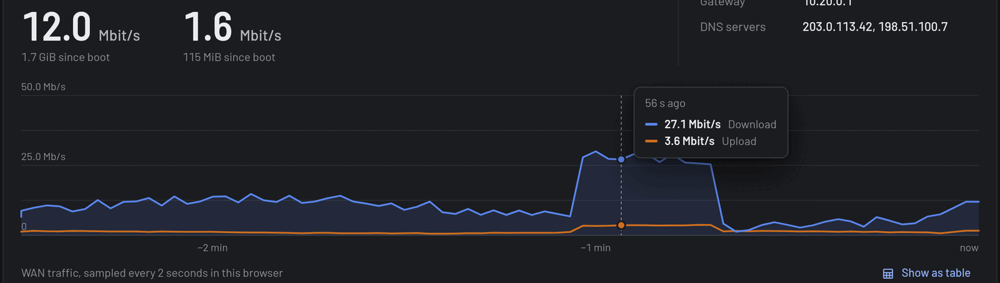
The router checks its own setup and explains what it found, with a button that takes you straight to the fix.
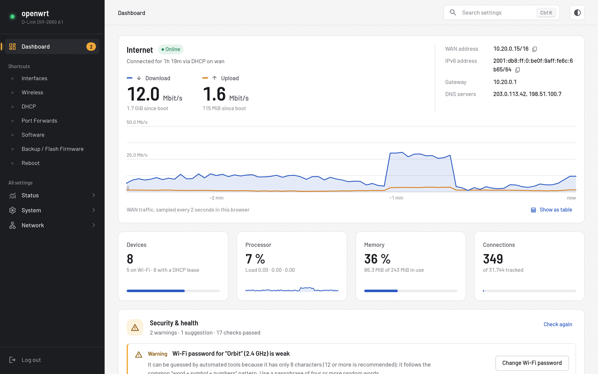
See every device with its name, IP, band and signal strength. One click scans nearby networks, charts how crowded each channel is, and recommends a quieter one.
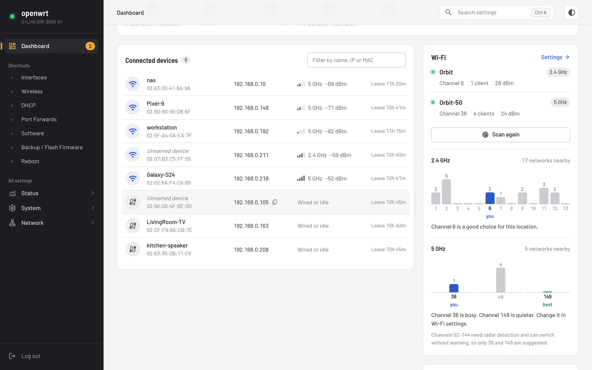
Press Ctrl K or /. Search understands everyday words: "wifi password", "port forward" and "factory reset" each take you to the right page.
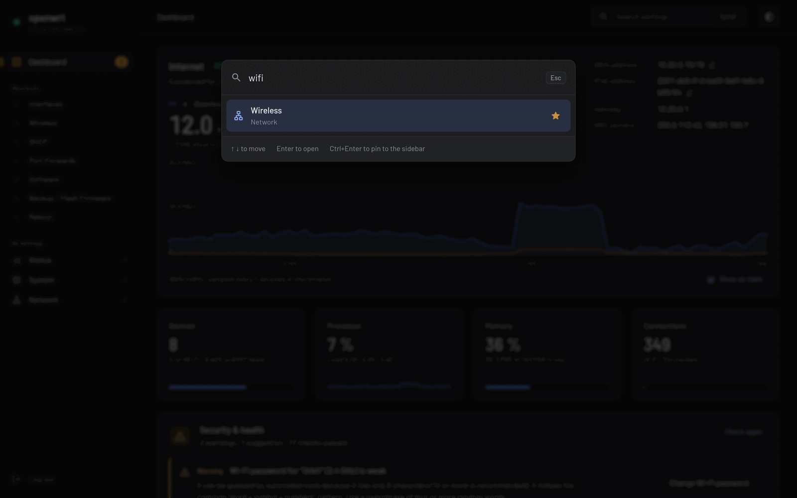
Light and dark
Auto, light or dark, switched from the top bar and remembered per browser. Both themes are designed for good contrast, not just inverted colours.
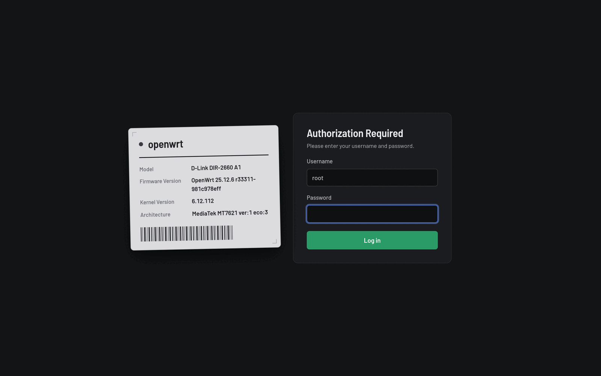
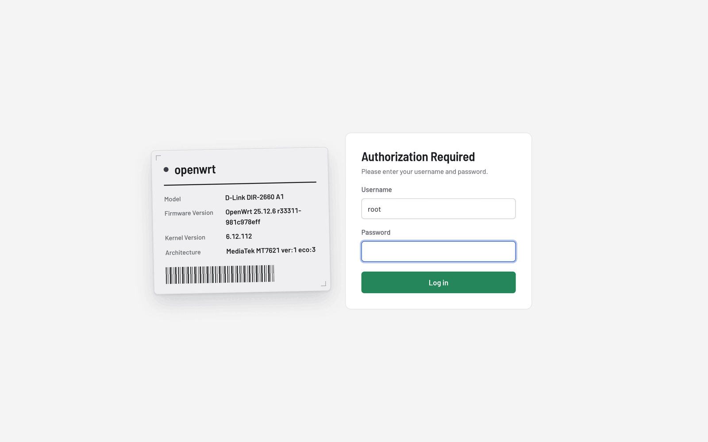
Mobile-first
Touch-sized controls, a slide-out menu and a dashboard that fits on one screen. No pinch-zooming tiny tables.
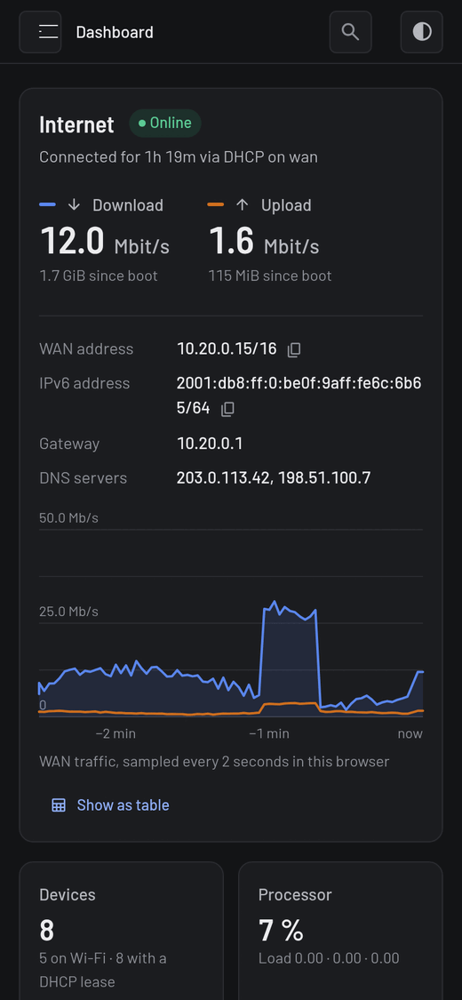
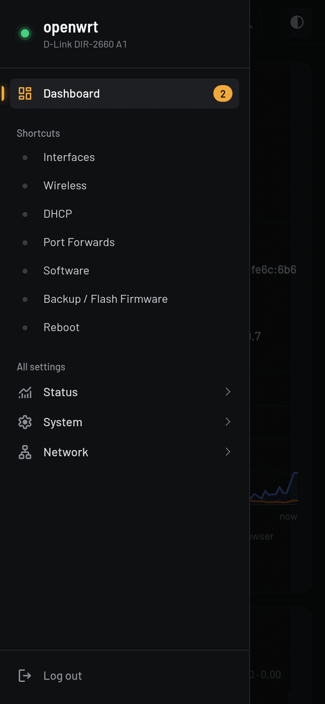
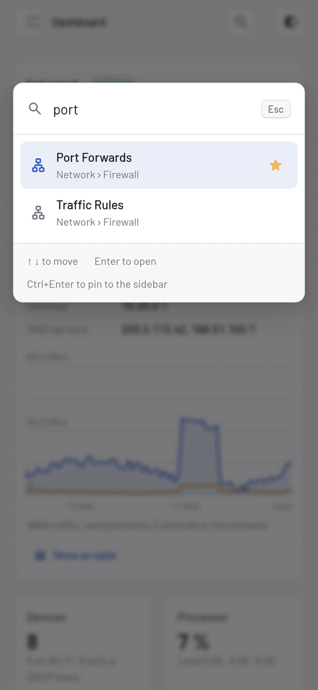
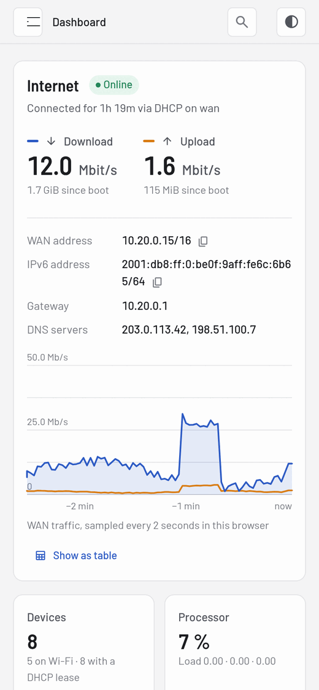
Under the hood
Designed for routers with 16 MB of flash, not for a showroom.
About 255 KiB installed. Icons are inlined at build time and the CSS and JS are minified.
Fonts are self-hosted. No CDNs, analytics or external requests of any kind.
It's a theme, not a fork. Stock and third-party LuCI pages keep working and pick up the new look.
The dashboard never changes your config. "Fix" buttons only take you to the right page.
Traffic history is kept in your browser, so the router does no extra logging.
Keyboard navigation, visible focus, ARIA roles and a table view for every chart.
Install
You need OpenWrt 25.12 or later with LuCI, SSH access to the router, and python3 and Node.js on your computer for the build step.
$ git clone https://github.com/rammanokar/luci-theme-faceplate.git faceplate $ cd faceplate/luci-theme-faceplate $ ./install.sh root@192.168.1.1 Faceplate installed; previous theme: /luci-static/bootstrap # changed your mind? $ ./uninstall.sh root@192.168.1.1
uninstall.sh restores it.Already logged in? Log out and back in once so your session can open the new dashboard.
FAQ
No. Faceplate supplies the header, footer, login page and a stylesheet. Every page, including third-party apps, renders as before with the new styling.
No. The dashboard uses the same ubus calls as LuCI's own status page, and traffic history lives in your browser. The security check only runs when you open the dashboard or click "Check again".
Any router running OpenWrt 25.12 or later with LuCI. It's been tested on MediaTek MT7621 (D-Link DIR-2660) and aarch64 (D-Link AQUILA PRO AI M30).
Yes. Run ./uninstall.sh to restore your previous theme, or pick another theme under System → System → Language and Style.
No. The demo runs the real theme CSS and JavaScript in your browser, fed with made-up data. Only the dashboard is live in the demo; on a router, every LuCI page is restyled.
Try it in your browser now, then install it in two minutes.